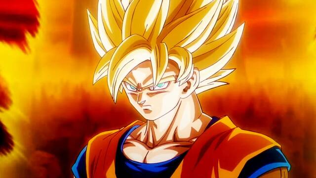
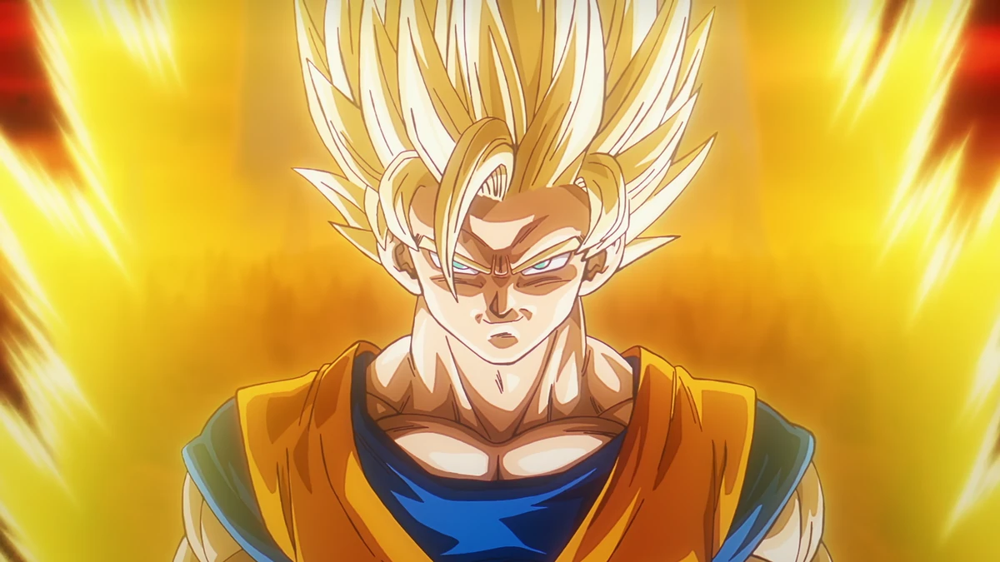
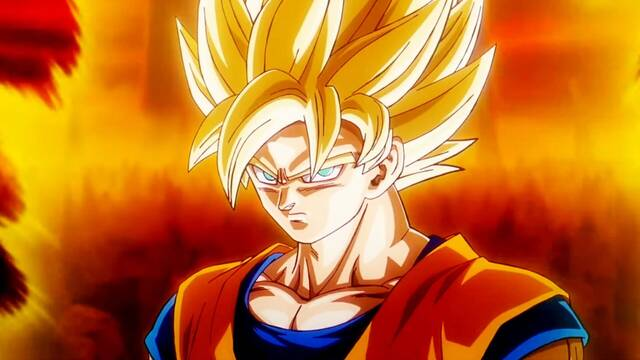
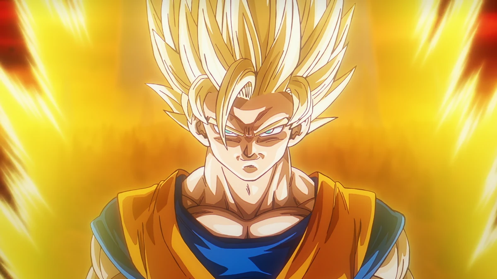

Fases de transformacion

Goku en estado normal
Goku Super Sayayin
Goku Super Sayayin Fase 2
Goku, cuyo nombre es kakaroto, es un guerrero sayayin que llega a la tierra desde el planeta vegeta cuando era un niño.Inicialmente su mision era conquitsar la tierra, pero un golpe en su cabeza lo hace olvidar su proposito y cambia a un ser mas amable y protector.Criado por su abuelo adoptivo llamado Gohan, Goku se convierte en un peleador de artes marciales y dedica su vida a proteger a la tierra de diversas amenazas entrenando constantemente para mejorar sus habilidades de pelea
Goku en estado normal
Goku Super Sayayin
Goku Super Sayayin Fase 2